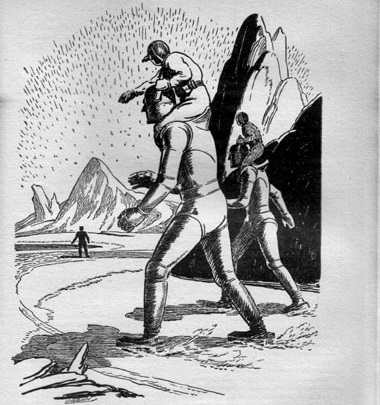

Summary of the week
This week was spent on design work, building one more prototype and reflecting on the first two prototypes.
Second Simulated Prototype
Directly inspired by Isaac Asimov's story Runaround, where the Three Laws of Robotics are first outlined, this interface is a simple switch. The image below shows a the inspirational "body switch" where a human has to sit on top of the humanoid robot in order to start it up.
The user, in order to actuate the robot, has to give up the use of the arms and hold the metal pins inside the interface.
Yuri and Ruairi tutorials
. Make more interfaces. Decent aesthetics, need to build a narrative; . It does not make a lot of sense to have them as end-effectors, they look like controllers. they look intuitive, maybe they control a very basic/stupid end effector? nice aesthetics, the loop needs to be closed! . When you have your hands in it, you can not use them, you agree to do that;
Conclusions
I will build maybe 1-2 more prototypes of controller interfaces, but I really need to boost the quality of the narrative, and indeed "close the loop".